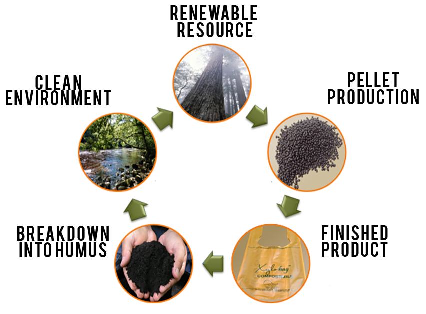

Our Story
Founded in 2010, cycleWood Associates saw the damage that plastic bags are having on our environment. Plastics constitute many of the modern products that have given us conveniences that we enjoy today. However, in time, we have seen some of the negative implications of relying so heavily on plastics. For example, plastic bags take 1000 years to decompose, which means that every single modern plastic bag that has ever been manufactured is still in existence today. With 32 million tons of plastic created every day, The waste generated is increasingly contributing to the litter in our oceans, waterways, and countryside. They are filling up our landfills, and they have terrible, often fatal, effects on wildlife.
Lignin is a natural byproduct of the paper industry and has many benefits.
Over the last few years, cycleWood Associates has perfected the process of replacing traditional plastics with products made with lignin, allowing consumers to have many of the modern conveniences that we are used to with none of the harmful environmental effects.
The Cycle

We modify lignin, an abundant, natural byproduct of the paper manufacturing process, and blend it with other compostable polymers to create our plastic products. The main benefit of using our Xylomer™ technology is that our products breaks down into humus in approximately 180 days once they have reached the natural environment, improving soil structure and leaving a cleaner environment. With government regulation restricting the use of harmful high-density polyethylene plastics, our products provide retailers with a viable, cheap plastic alternative. Our lignin based plastics allow consumers to eliminate unsightly plastic litter from their communities.
Processing
Our Xylomer™ pellets are a proprietary blend of polymers and additives to produce a 100% biodegradable and compostable thermoplastic. The pellets are produced on standard compounding equipment. We transform our Xylomer™ pellets into many different products using existing converting equipment. To date, we have produced single-use plastic bags, trash can liners, and meat bags on commercial blown extrusion lines. Additionally, we have used the Xylomer™ pellets in injection molding and vacuum forming processes to create samples of cups and bowls.